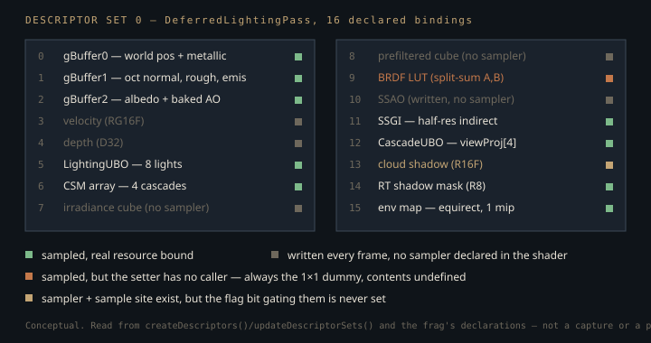

Monograph · Tree · ← Module hub · Deferred lighting
deferred
Deferred lighting
Light loop, IBL, SSAO bind, BRDF eval.
The position it never reconstructs
Textbook deferred shading stores depth and rebuilds world position per pixel from an inverse view-projection matrix. OHAO does not. GBuffer0 is an `R16G16B16A16_SFLOAT` target carrying world position in RGB and metallic in A, and the lighting shader reads the position straight out of it:
vec3 fragPos = gBuffer0Sample.rgb;shaders/core/deferred_lighting.frag:161The `invViewProj` matrix is still the first 64 bytes of the push-constant block and no line of the shader body reads it; the depth attachment is written into descriptor binding 4 every frame and the fragment shader never declares a sampler for it.
mat4 invViewProj;shaders/core/deferred_lighting.frag:69The rejected alternative — depth plus inverse view-projection, which the push block is still sized for — costs a matrix multiply and a divide per pixel. Keeping position resident instead costs 48 bits per pixel of extra G-Buffer write and read bandwidth: the RGB of the RGBA16F target, not all 64, because the alpha channel carries metallic and has to be stored under either scheme. It also pins world coordinates to half-float precision: sub-millimetre near the origin, but ~0.5 units of representable spacing once a fragment is 1000 units out, where lighting quantises into terraces. For model-sized scenes the trade is free; a kilometre-scale world is where it breaks first.
The sky sentinel is a clear colour
Background pixels are detected by an exact float comparison against the value the G-Buffer pass clears GBuffer0 to — all four channels zero.
if (gBuffer0Sample.rgb == vec3(0.0) && gBuffer0Sample.a == 0.0) {shaders/core/deferred_lighting.frag:155clearValues[0].color = {{0.0f, 0.0f, 0.0f, 0.0f}}; // Position (rgb) + Metallic (a)ohao/render/deferred/gbuffer_pass.cpp:156Those two lines are one contract split across two files. Change the clear colour to anything else — a far-plane position, a debug magenta — and every background pixel falls through into the full lighting loop. The sentinel also has a real, if narrow, false positive: a non-metallic fragment sitting exactly on the world origin is classified as sky and written as transparent black.
Eight lights, one loop, 72 dead bytes per record
The light array is a uniform buffer of eight fixed-size records, and the loop bound comes from the push constant rather than the `numLights` field inside the UBO.
int lightCount = int(min(pc.lightCount, uint(MAX_LIGHTS)));shaders/core/deferred_lighting.frag:222That field is unread by the shader but it is not dead data: the host keeps the same buffer mapped, reads `numLights` back out of it, floors it at 1, and *that* is the push constant. The count round-trips through GPU-visible memory before the loop sees it.
uint32_t lightCount = lightData ? static_cast<uint32_t>(std::max(1, lightData->numLights)) : 1u;ohao/gpu/vulkan/render_dispatch.cpp:99Each record is 128 bytes and 72 of them are dead here. Sixty-four are the per-light `lightSpaceMatrix`, never read because cascade shadows resolve through `cascades.viewProj[]` from a separate UBO instead.
alignas(16) glm::mat4 lightSpaceMatrix; // Transform to light space for shadow mapping (64 bytes)ohao/gpu/vulkan/renderer.hpp:81The other eight are `params.z` and `params.w`: the CPU packs a shadow-map index into `.z` every frame, `.w` was never given a meaning, and the shader touches only `.x` and `.y`, the two spot-cone cosines.
light.params.x, light.params.y);shaders/core/deferred_lighting.frag:241The `BRDFSurface` — metallic sharpening, F0 derivation, normalised N and V — is built once before the loop, so the per-light work is `evaluateBRDF` from `brdf_ggx.glsl` (the height-correlated Smith stack with Burley diffuse and Kulla-Conty compensation, a different BRDF from the one the path tracer runs), plus `calculateAttenuation` for point and spot lights and a cone term for spots. On the CSM path it is also a whole `calculateShadowCSM` per iteration — a matrix transform and a nine-tap PCF — whose two arguments do not depend on the light index, so a second directional light recomputes a scalar identical to the first.
shadow = calculateShadowCSM(fragPos, viewDepth);shaders/core/deferred_lighting.frag:251Attenuation: a physical falloff with a hard floor
Point and spot lights use the windowed inverse square that UE4 popularised:
where $d$ is the distance from fragment to light and $r$ is the light's range, packed into `light.direction.w`. The first factor is the physical $1/d^2$; the second is a window that drives both the value *and* its derivative to zero at $d = r$ — squaring the window is what makes the derivative vanish, so a light's influence ends without a visible edge.
return invSq * windowing * windowing;shaders/core/deferred_lighting.frag:97That vanishing derivative is the property a range cull would need, and OHAO never cashes it in. The loop has no early-out and no attenuation threshold, and the CPU side that packs the buffer applies no range test either — it stops at `MAX_LIGHTS` and nothing else. Every light is evaluated at every lit pixel, window and all.
Where OHAO departs from UE4 is the denominator. UE4 divides by $d^2 + 1$, softening the near field everywhere; OHAO keeps the true $1/d^2$ and clamps only the singularity, at $d = 0.1$ world units. Inside that radius a point light stops brightening, and that clamp is the only thing between a light placed inside geometry and an unbounded value in an `R16G16B16A16_SFLOAT` target whose ceiling is 65504.
float invSq = 1.0 / max(d2, 0.01); // inverse-square (physical)shaders/core/deferred_lighting.frag:95One shadow mask for every light
Shadowing is decided per fragment before the BRDF, and the two shadow techniques are mutually exclusive rather than combined: if an RT shadow mask is bound the C++ side sets bit 5 and never sets the CSM bit.
m_params.flags |= 32; // RT shadows (bit 5)ohao/render/deferred/deferred_lighting_pass.cpp:171The mask is a screen-space R8 image sampled at the fragment's own UV — a single scalar, with no light index in it — and the loop multiplies that same scalar into every light's contribution.
shadow = texture(rtShadowMask, inTexCoord).r;shaders/core/deferred_lighting.frag:249So with RT shadows on and more than one light in the scene, all lights are occluded by whatever the RT shadow pass traced for one of them. The CSM path has the opposite restriction: it is gated on `lightType == 0`, so point and spot lights cast no shadow here at all. Cascades themselves are a 3×3 PCF tap on the array slice chosen by view-space depth, and the cascade UBO carries a `cascadeBlendWidth` the shader never reads:
float cascadeBlendWidth;shaders/core/deferred_lighting.frag:52so a cascade transition is a hard switch at the split distance, visible as a discontinuity in filter width rather than a blend.
The IBL that never received its cubemaps
The pass exposes a setter for the three classic IBL resources — irradiance cubemap, prefiltered cubemap, BRDF LUT. Its only caller is a `DeferredRenderer` forwarder that is itself never called, and `IBLProcessor`, the class that generates all three, is never instantiated outside its own directory.
void setIBLTextures(VkImageView irradiance, VkImageView prefiltered,ohao/render/deferred/deferred_lighting_pass.hpp:23Bindings 7, 8 and 9 therefore resolve, every frame, to a 1×1 `R8G8B8A8_UNORM` dummy that is allocated device-local and barriered straight out of `VK_IMAGE_LAYOUT_UNDEFINED` without ever being cleared or uploaded — its texel value is undefined by specification. Only 9 is ever read: the frag declares no sampler for either cubemap binding, so 7 and 8 are written into the set each frame and never touched by any instruction.

The shader routes around all of it. It ignores the cubemap bindings entirely, samples the raw equirectangular HDR at binding 15, and when the LUT fetch comes back near zero substitutes an analytic pair for the split-sum scale and bias:
brdf = vec2(max(1.0 - roughness, 0.04), roughness * 0.25);shaders/core/deferred_lighting.frag:296The surrounding formula is the standard split-sum approximation
with $L_{\text{pre}}$ the roughness-filtered environment radiance along the reflection vector $R$, $\alpha$ roughness, and $(A,B)$ the precomputed scale/bias of the environment BRDF. Nothing in OHAO precomputes them. The fetch lands on the uninitialised dummy, so $(A,B)$ is whatever those four bytes happen to hold, and the analytic substitution is a guard on the sampled value, not a guarantee: it fires only when the two components sum to under $10^{-4}$. A dummy reading back as zeros takes the analytic branch; a dummy reading back as anything else is used as-is. Either way the shape is right and the integral is not.
if (brdf.x + brdf.y < 1e-4) {shaders/core/deferred_lighting.frag:295vec3 specularAmbient = prefilteredColor * (F * brdf.x + brdf.y);shaders/core/deferred_lighting.frag:299$L_{\text{pre}}$ has a sharper problem. The shader asks for a mip proportional to roughness, on an assumption stated in its own comment:
float lod = roughness * 9.0; // assuming 10 mip levels for 1024x512shaders/core/deferred_lighting.frag:281The only producer of the view that ever reaches binding 15 creates that image with one mip level, and builds a single-level view over it:
imgInfo.mipLevels = 1;ohao/gpu/vulkan/light_upload.cpp:319Every `textureLod` therefore clamps to mip 0. Roughness does not blur the environment reflection, and the diffuse term — a single texel fetched at LOD 9 along the normal — is a sharp environment sample, not a cosine convolution.
vec3 irradiance = textureLod(envMap, nUV, 9.0).rgb;shaders/core/deferred_lighting.frag:286A mirror and a chalk sphere thus receive the same environment sample here, differing through Fresnel, through whatever $(A,B)$ turned out to be — and through one term the split-sum formula does not contain. Above `metallic > 0.5` the shader adds a second, F0-weighted specular contribution floored at four times the ambient intensity, so dark metals do not crush to black when the environment sample is dim: a hand-tuned brightener that fires on the mirror and never on the chalk.
specularAmbient += surface.F0 * max(prefilteredColor, vec3(lighting.ambientIntensity * 4.0));shaders/core/deferred_lighting.frag:304The plumbing exists; the convolution does not.
`ibl.glsl` is `#include`d by no shader in the tree, so `calculateIBL` never runs. The frag re-derives the split-sum structure inline, but not the code: the one line common to both is the combine, `prefilteredColor * (F * brdf.x + brdf.y)`. The include fetches `samplerCube` irradiance and prefiltered maps and scales LOD by its own `MAX_REFLECTION_LOD = 4.0`; the frag fetches one equirect `sampler2D` and scales by 9.0. The *file* is dead, and what ships beside it is a re-derivation for a texture type nothing in the engine ever produces for this pass.
const float MAX_REFLECTION_LOD = 4.0;shaders/includes/lighting/ibl.glsl:8Weather channels with no driver
Four branches in the shader modulate albedo, roughness and metallic for rain wetness, mud, snow and frost. Three of them are orientation-aware: wetness and mud scale by `clamp(N.y * 2.0, 0, 1)`, snow by a steeper ramp that stays at zero until the normal is more than ~17° off horizontal, so water pools and snow settles on upward-facing surfaces.
float slopeFactor = clamp((N.y - 0.3) * (1.0 / 0.7), 0.0, 1.0);shaders/core/deferred_lighting.frag:183Frost has no such term: its branch reads the push constant straight into the mix weight, so undersides, walls and ceilings take the same pale-ice tint and the same collapse to roughness 0.08 as the ground does.
float f = pc.frostCover;shaders/core/deferred_lighting.frag:202All four cost 24 bytes of the push block and are permanently inert: the three setters that would drive them have no caller.
void setWetness(float w) { m_params.wetness = glm::clamp(w, 0.0f, 1.0f); }ohao/render/deferred/deferred_lighting_pass.hpp:51The physics side declares the same triple — `PhysicsWorld::updateTerrainFriction` takes wetness, snow and frost — and is equally uncalled, so a weather system was designed across two subsystems and never given a driver. Cheap to revive; not a shipped feature.
A fifth channel is dead the same way and takes the last 16 bytes of the push block with it. `setCloudShadow` has no caller anywhere in the tree, so `m_cloudShadowView` stays null, flag bit 4 is never raised, and the cloud-shadow multiply at the end of the shader — the only term in this pass that scales final colour rather than per-light radiance — is unreachable.
if (m_cloudShadowView != VK_NULL_HANDLE) m_params.flags |= 16; // Cloud shadowsohao/render/deferred/deferred_lighting_pass.cpp:175Binding 13 therefore sits where 7, 8 and 9 do — written every frame with the 1×1 dummy — but with a sampler declared and a fetch written against it, in a branch no frame ever enters.
Contracts
- GBuffer0's clear colour and the shader's sky test are one invariant in two files. Changing either alone sends background pixels through the lighting loop.
- The pass owns exactly one descriptor set (`maxSets = 1`) and `updateDescriptorSets()` rewrites all 16 bindings at the top of every `execute()`, with nothing guarding against an in-flight command buffer still reading it. The shipping caller does not honour that: `VulkanRenderer::renderDeferred` waits on `waitForFrame(m_currentFrame)`, which is frame N−3's fence, and `MAX_FRAMES_IN_FLIGHT` is 3 — so up to two already-submitted command buffers can still be reading the set when it is rewritten. A live race, not a hypothetical one.
- `LightingParams` is exactly 200 bytes; the explicit padding floats after `wetness`, `snowCover` and `frostCover` hold the two trailing `vec2`s on 8-byte boundaries, keeping the C++ struct byte-identical to the std430 push block. The "184 bytes" in the shader's comment is the offset before those `vec2`s, not the size.
- Binding an RT shadow mask disables CSM for that frame outright, and the mask is applied identically to all lights. Multi-light scenes with RT shadows are not correct, only plausible.
- Declared and never read by this shader: `lighting.numLights` (the host reads it back off the mapped buffer instead), `lighting.shadowBias`, `lighting.shadowStrength`, each light's `lightSpaceMatrix`, `params.z` and `params.w`, `cascades.normalBias`, `cascades.cascadeBlendWidth`, `pc.invViewProj`, and descriptor bindings 3, 4, 7, 8 and 10. Binding 13 is a separate case: declared, sampled in source, and gated behind a flag bit nothing ever sets.
Source files
shaders/core/deferred_lighting.fragohao/render/deferred/gbuffer_pass.cppohao/gpu/vulkan/render_dispatch.cppohao/gpu/vulkan/renderer.hppohao/render/deferred/deferred_lighting_pass.cppohao/render/deferred/deferred_lighting_pass.hppohao/gpu/vulkan/light_upload.cppshaders/includes/lighting/ibl.glslParent hub for the full pipeline narrative; this page is the file-level design unit. Sitemap · hover glossary terms anywhere.